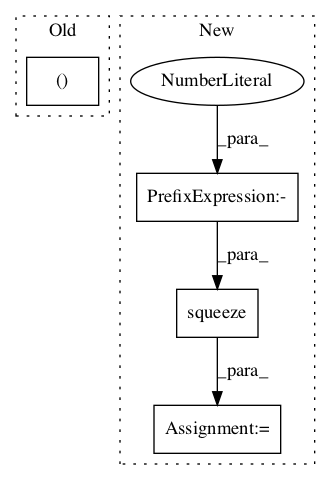

fcd690b14b04c11e7f25b9d473db056c4b7947b3,official/vision/beta/ops/anchor.py,AnchorLabeler,label_anchors,#AnchorLabeler#Any#Any#Any#,143

Before Change
flattened_anchor_boxes = tf.concat(flattened_anchor_boxes, axis=0)
similarity_matrix = self.similarity_calc(gt_boxes, flattened_anchor_boxes)
match_results = self.matcher(similarity_matrix)
cls_targets, box_targets, cls_weights, box_weights = self.anchor_labeler(
gt_boxes, gt_labels, match_results)
box_targets_list = box_list.BoxList(box_targets)
anchor_box_list = box_list.BoxList(flattened_anchor_boxes)
After Change
cls_targets = self.anchor_labeler(gt_labels, match_indices, cls_mask, -1)
box_mask = tf.tile(cls_mask, [1, 4])
box_targets = self.anchor_labeler(gt_boxes, match_indices, box_mask)
weights = tf.squeeze(tf.ones_like(gt_labels, dtype=tf.float32), -1)
box_weights = self.anchor_labeler(weights, match_indices, mask)
ignore_mask = tf.equal(match_indicators, -2)
cls_weights = self.anchor_labeler(weights, match_indices, ignore_mask)
box_targets_list = box_list.BoxList(box_targets)
anchor_box_list = box_list.BoxList(flattened_anchor_boxes)
box_targets = self.box_coder.encode(box_targets_list, anchor_box_list)
In pattern: SUPERPATTERN
Frequency: 3
Non-data size: 4
Instances
Project Name: tensorflow/models
Commit Name: fcd690b14b04c11e7f25b9d473db056c4b7947b3
Time:
Author: null
File Name: official/vision/beta/ops/anchor.py
Class Name: AnchorLabeler
Method Name: label_anchors
Project Name: tensorflow/models
Commit Name: a26d77c47b319c367c2a81098eee72d9373cdc91
Time:
Author: null
File Name: official/vision/beta/modeling/layers/roi_sampler.py
Class Name: ROISampler
Method Name: call
Project Name: GPflow/GPflow
Commit Name: f36052b395dc48a473dcc5b49d8d9a3b5d6f58ba
Time:
Author: null
File Name: gpflow/conditionals/mo_conditionals.py
Class Name:
Method Name: separate_independent_conditional